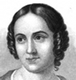
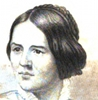
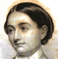

Alison Booth
Hart, John Seely. The Female Prose Writers of America: With Portraits, Biographical Notices, and Specimens of Their Writings. Philadelphia: Butler, 1851; 1852; 1855; 1857; 1864; 1866; 1870.
TOC: Catherine M. Sedgwick; Eliza Leslie; Caroline Gilman; Sarah Hall; Maria J. McIntosh; Lydia H. Sigourney; Sarah J. Hale; Louisa C. Tuthill; Caroline M. Kirkland; Lydia M. Child; Emma C. Embury; Mary S. H. Schindler; Caroline Lee Hentz; Hannah Adams; Elizabeth F. Ellet; E. Oakes Smith; Louisa S. McCord; Ann S. Stephens; Frances S. Osgood; Elizabeth C. Kinney; Harriet Farley; Mary H. Eastman; S. Margaret Fuller; Harriet Beecher Stowe; Sara H. Browne; Maria J. B. Browne; Elizabeth Bogart; Jane Elizabeth Larcombe; Emily C. Judson; Sara J. Clarke; Anne C. Lynch; Mary E. Hewitt; Alice B. Neal; Clara Moore; Ann E. Porter; E. W. Barnes; Anne T. Wilbur; Eliza L. Sproat; Mary Spenser Pease; Susan Fenimore Cooper; Elizabeth Wetherell; Caroline Orne; Caroline May; Julia C. R. Dorr; Mary Elizabeth Moragne; Mary Elizabeth Lee; Mary J. Windle; Frances B. M. Brotherson.
-
Catherine M. Sedgwick
-
Caroline M. Kirkland
-
Caroline Lee Hentz
-
Elizabeth F. Ellet
-
Ann S. Stephens
-
S. Margaret Fuller
-
Alice B. Neal
Search OCLC WorldCat for this title.
Search Google Books for this title.